THE IMPERIAL COMMERCE NETWORK
Exchange
Browse resources, equipment and goods from the connected game markets.
THE IMPERIAL COMMERCE NETWORK
Market Listings
Checking current game listings…
Browse verified listings here. Confirm resource trades inside Minecraft.
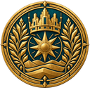
VAERKRING RESERVE
The Dunemark collection
Five denominations, five distinctive designs. Parchment, deep teal and imperial gold connect the series; each note has its own Minecraft-style portrait, reverse scene and colour accents. The original crown, sun and dunes seal appears on every denomination.
1 Dunemarks · 5 Dunemarks · 100 Dunemarks · 1,000 Dunemarks · 5,000 Dunemarks
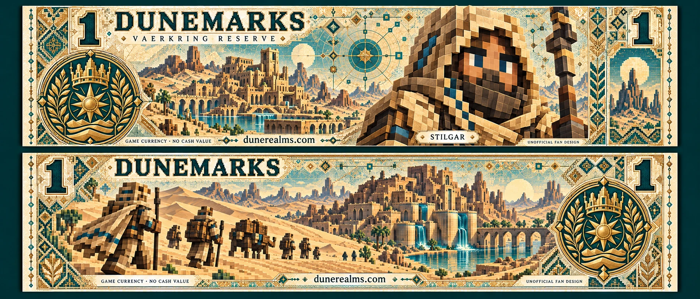
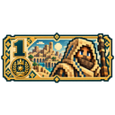
1 Dunemarks · Stilgar — Desert stewardship and water cisterns. Vaerkring Reserve.64px transparent GUI icon · 128px icon · Full note artwork
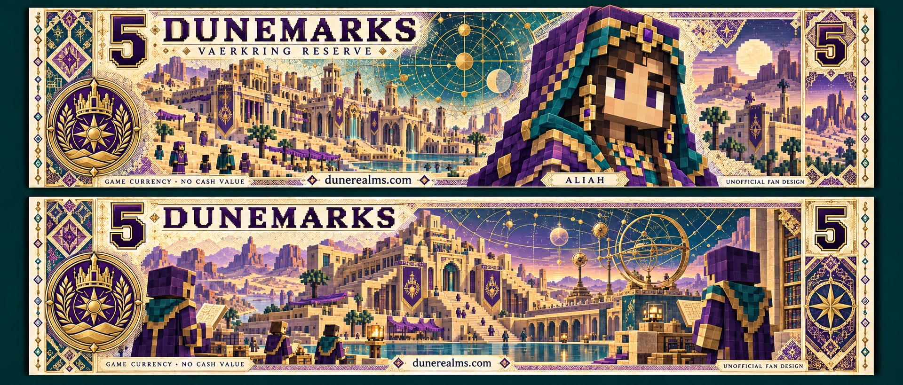
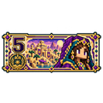
5 Dunemarks · Aliah — Ceremonial archives and celestial instruments. Vaerkring Reserve.64px transparent GUI icon · 128px icon · Full note artwork
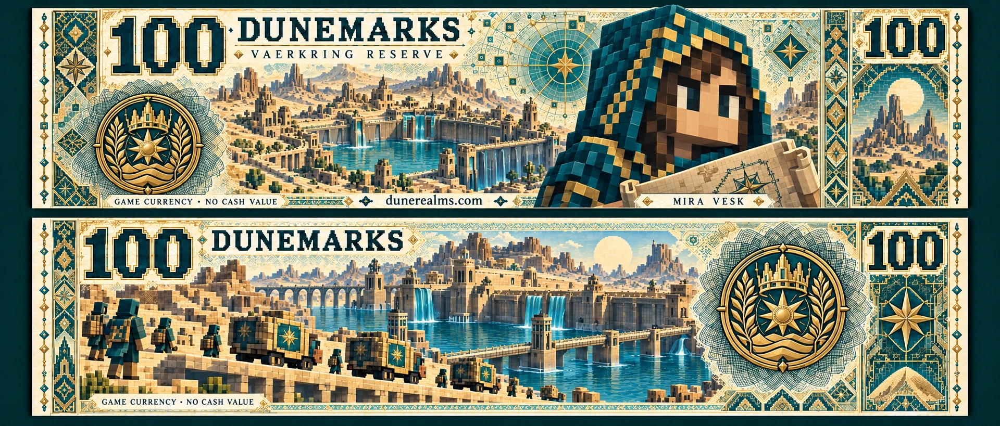
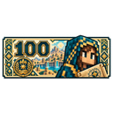
100 Dunemarks · Mira Vesk — Cartography, caravans and reservoirs. Vaerkring Reserve.64px transparent GUI icon · 128px icon · Full note artwork
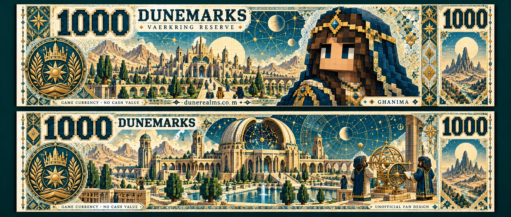
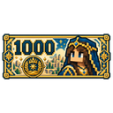
1,000 Dunemarks · Ghanima — Imperial astronomy and gardens. Vaerkring Reserve.64px transparent GUI icon · 128px icon · Full note artwork
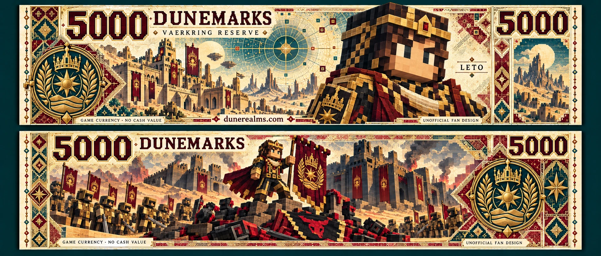
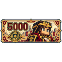
5,000 Dunemarks · Leto — An imagined game victory over House Harkonnen. Vaerkring Reserve.64px transparent GUI icon · 128px icon · Full note artwork
0 Dunemarks · In the search for Leto II
A separate commemorative design. Not an in-game denomination, item, reward or redeemable note.
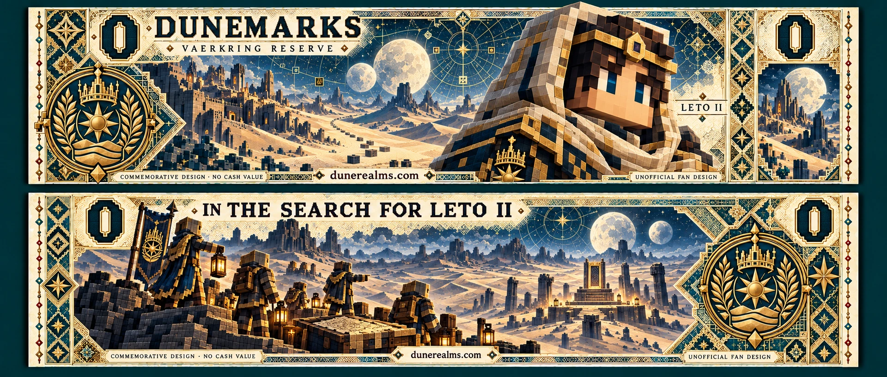
These are decorative game-currency designs with no cash value. They do not grant a balance, function as bearer tokens or replace the server’s currency ledger. The character editions are unofficial Dune fan artwork; the 5,000 scene is an imagined game interpretation, not a claim of book accuracy. No merchandise licence or rights-holder approval is implied.
Download the original imperial seal → · Java GUI resource pack →